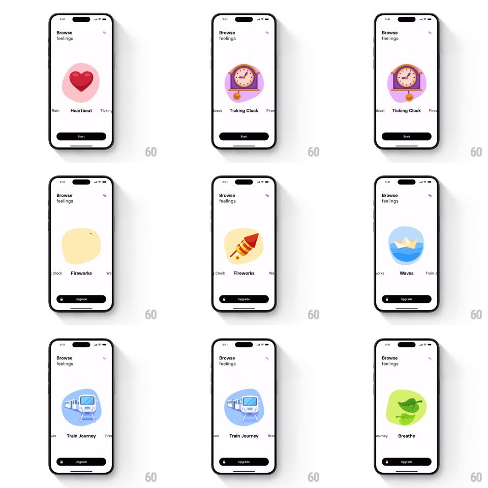

Media
Frame-by-frame

Rebuild this interaction 1:1: Thrum's "Browse feelings" carousel - swipe horizontally through soundscape cards where a colored blob shape morphs behind each animated vector illustration (heart, clock, fireworks, paper boat, train, leaves) with the name row sliding beneath.

Rebuild this interaction 1:1: Thrum's "Browse feelings" carousel - swipe horizontally through soundscape cards where a colored blob shape morphs behind each animated vector illustration (heart, clock, fireworks, paper boat, train, leaves) with the name row sliding beneath.
## Integration
Integration: stack-agnostic spec - springs given as stiffness/damping, timed motions as duration + curve; map every value to your framework and animation library of choice.
## Scene
White screen, "Browse feelings" header. Centered circular illustration on an organic colored blob (Heartbeat on pink, Ticking Clock on lavender, Fireworks on yellow, Waves on blue, Train Journey on blue, Breathe on green). A name strip below shows the current label bold with neighbors peeking ("Rain - Heartbeat - Tickin..."). Bottom button: black Start pill for free sounds, or an Upgrade pill with a lock icon for premium ones.
## Motion spec
Pattern: snapping carousel with morphing backdrop.
- Drag: the illustration track moves 1:1; the blob behind stretches toward the drag direction (scaleX 1 -> 1.08) and its color crossfades toward the incoming card's hue mid-gesture.
- Release: snaps to the nearest card (spring ~300/24, ~350ms); the blob settles with a wobble (spring ~260/14 on its border-radius path) and the incoming illustration scales 0.92 -> 1.
- The name strip slides with the carousel at 1.2x speed (parallax) and the centered label bolds + darkens while neighbors gray out.
- Each illustration loops a subtle idle animation (heart beats, boat bobs, leaves sway).
- The bottom button morphs between Start and Upgrade states (width + label crossfade, 250ms) based on the centered card.
## Calibration
- Blob color = the card's accent; the crossfade midpoint lands exactly at the snap threshold.
- Only the centered illustration animates its idle loop; neighbors are static.
## Reduced motion
Cards snap without blob stretch or wobble; idle loops off.
## Don't miss
- Locked cards swap the CTA to Upgrade with a lock glyph - state rides the carousel.
- Neighbor labels are clipped mid-word at both edges, signaling more content.